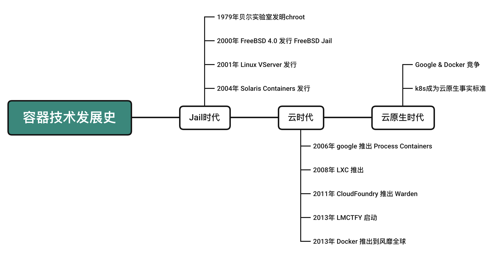
细节的信息大家可以查找以下链接。
https://baijiahao.baidu.com/s?id=1666722958911645867&wfr=spider&for=pc
物理服务器：实际的机器或计算机系统。相对于虚拟机而言，指的是实体计算机。物理服务器为虚拟机提供硬件基础，有时也被称为“主机”或“宿主”。
虚拟化：采用虚拟技术将一台计算机分割成多台逻辑计算机的过程。在单一计算机上同时运行多个逻辑计算机，每个逻辑计算机可以运行不同操作系统，并且各应用程序在相互隔离的环境中运行，互不干扰，从而显著提升计算效率。
容器化：容器化是一种虚拟技术，也称为操作系统层虚拟化。该技术虚拟化操作系统内核，允许将用户空间软件实例分割为多个独立单元，在操作系统内核中运行。这些独立实例被称为容器。对实例的所有者和用户而言，他们使用的服务器程序看起来像是专属的。容器技术是虚拟化的一种，docker 目前是广泛使用的容器技术标准。
https://baijiahao.baidu.com/s?id=1755166300139325821&wfr=spider&for=pc
容器虚拟化，有别于主机虚拟化，是操作系统层的虚拟化。容器虚拟化是通过namespace进行个进程的隔离，加上cgroups进行资源的控制，以此来进行虚拟化。
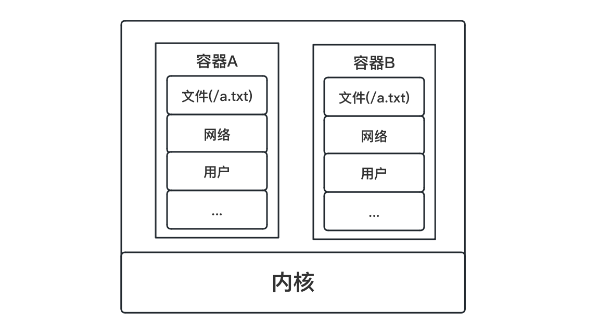
这样更轻量级，因为只是操作系统里面的隔离，就是公用内核的。
如果是虚拟机，那就是全部东西都虚拟一个出来，那样是很占资源的。
Namespace可以隔离的一些资源如下。
| Namespace | 系统调用参数 | 被隔离的全局系统资源 | 引入内核版本 |
|---|---|---|---|
| UTS | CLONE_NEWUTS | 主机和域名 | 2.6.19 |
| IPC | CLONE_NEWIPC | 信号量、消息队列和共享内存、进程间通信 | 2.6.19 |
| PID | CLONE_NEWPID | 进程编号 | 2.6.24 |
| Network | CLONE_NEWNET | 网络设备、网络栈、端口等 | 2.6.29 |
| Mount | CLONE_NEWNS | 文件系统挂载点 | 2.6.19 |
| User | CLONE_NEWUSER | 用户和用户组 | 3.8 |
Linux dd 命令用于读取、转换并输出数据dd 可从标准输入或文件中读取数据，根据指定的格式来转换数据，再输出到文件、设备或标准输出。
dd OPTION参数
if=文件名：输入文件名，默认为标准输入。即指定源文件
of文件名：输出文件名，默认为标准输出。即指定目的文件
ibs=bytes：一次读入 bytes 个字节，即指定一个块大小为 bytes 个字节
obs=bytes：一次输出 bytes 个字节，即指定一个块大小为 bytes 个字节
bs=bytes：同时设置读入/输出的块大小为 bytes 个字节。
cbs=bytes：一次转换 bytes 个字节，即指定转换缓冲区大小
skip=blocks：从输入文件开头跳过 blocks 个块后再开始复制
seek=blocks：从输出文件开头跳过 blocks 个块后再开始复制
count=blocks：仅拷贝 blocks 个块，块大小等于 ibs 指定的字节数
conv=<关键字>：关键字有11种。
可以用它来生成一个指定大小的空白文件
dd if=/dev/zero of=test.img bs=8k count=1024/dev/zero是操作系统的一个特殊文件，可以产生连续不断的空白字符流
这里就可以产生一个8M的文件。
(base) [yufc@ALiCentos7:~/Src/Bit-Courses/DockerSrc/data]$ dd if=/dev/zero of=test.img bs=8k count=10241024+0 records in1024+0 records out8388608 bytes (8.4 MB, 8.0 MiB) copied, 0.00964433 s, 870 MB/s(base) [yufc@ALiCentos7:~/Src/Bit-Courses/DockerSrc/data]$ ll -htotal 8.0M-rw-rw-r-- 1 yufc yufc 8.0M Aug 29 19:50 test.img(base) [yufc@ALiCentos7:~/Src/Bit-Courses/DockerSrc/data]$ 也可以用来做一个大小写转换
先创建一个test.txt然后里面写Hello World!
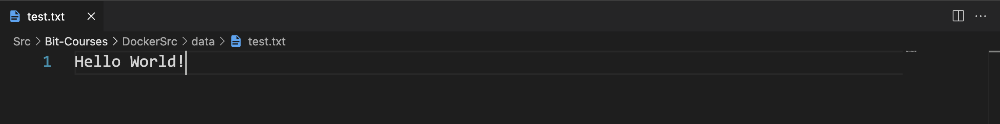
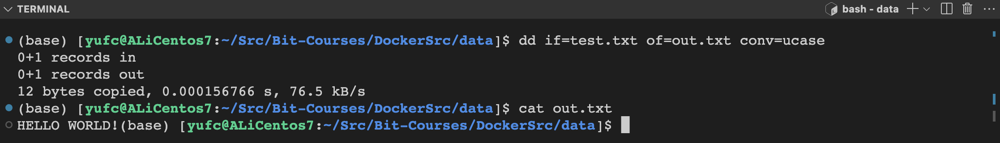
用于在设备上创建 Linux 文件系统，俗称格式化，比如我们使用 U 盘的时候可以格式化。
mkfs [-V] [-t fstype] [fs-options] filesys [blocks]参数
Shell-t fstype : 指定要建立何种文件系统;如 ext3，ext4filesys : 指定要创建的文件系统对应的设备文件名; blocks:指定文件系统的磁盘块数。-V : 详细显示模式 fs-options : 传递给具体的文件系统的参数我们可以把刚才dd命令生成的test.img格式化成一个磁盘。
(base) [yufc@ALiCentos7:~/Src/Bit-Courses/DockerSrc/data]$ lsout.txt test.img test.txt(base) [yufc@ALiCentos7:~/Src/Bit-Courses/DockerSrc/data]$ mkfs -t ext4 ./test.imgmke2fs 1.42.9 (28-Dec-2013)./test.img is not a block special device.Proceed anyway? (y,n) yDiscarding device blocks: done Filesystem label=OS type: LinuxBlock size=1024 (log=0)Fragment size=1024 (log=0)Stride=0 blocks, Stripe width=0 blocks2048 inodes, 8192 blocks409 blocks (4.99%) reserved for the super userFirst data block=1Maximum filesystem blocks=83886081 block group8192 blocks per group, 8192 fragments per group2048 inodes per group
Allocating group tables: done Writing inode tables: done Creating journal (1024 blocks): doneWriting superblocks and filesystem accounting information: done
(base) [yufc@ALiCentos7:~/Src/Bit-Courses/DockerSrc/data]$ lltotal 1184-rw-rw-r-- 1 yufc yufc 12 Aug 29 19:56 out.txt-rw-rw-r-- 1 yufc yufc 8388608 Aug 29 20:09 test.img-rw-rw-r-- 1 yufc yufc 12 Aug 29 19:54 test.txt(base) [yufc@ALiCentos7:~/Src/Bit-Courses/DockerSrc/data]$Linux df(英文全拼:disk free) 命令用于显示目前在 Linux 系统上的文件系统磁盘使用情况统计。
df [OPTION]... [FILE]...参数
-a, --all 包含所有的具有 0 Blocks 的文件系统-h, --human-readable 使用人类可读的格式(预设值是不加这个选项的...)-H, --si 很像 -h, 但是用 1000 为单位而不是用 1024-t, --type=TYPE 限制列出文件系统的 TYPE-T, --print-type 显示文件系统的形式案例
xxxxxxxxxx#查看磁盘使用情况 df -h #查看磁盘的系统类型 df -Thxxxxxxxxxx(base) [yufc@ALiCentos7:~/Src/Bit-Courses/DockerSrc/data]$ df -hFilesystem Size Used Avail Use% Mounted ondevtmpfs 857M 0 857M 0% /devtmpfs 868M 0 868M 0% /dev/shmtmpfs 868M 572K 867M 1% /runtmpfs 868M 0 868M 0% /sys/fs/cgroup/dev/vda1 40G 26G 13G 68% /tmpfs 174M 0 174M 0% /run/user/1000(base) [yufc@ALiCentos7:~/Src/Bit-Courses/DockerSrc/data]$ dfFilesystem 1K-blocks Used Available Use% Mounted ondevtmpfs 877396 0 877396 0% /devtmpfs 887988 0 887988 0% /dev/shmtmpfs 887988 572 887416 1% /runtmpfs 887988 0 887988 0% /sys/fs/cgroup/dev/vda1 41152812 26333864 12915240 68% /tmpfs 177600 0 177600 0% /run/user/1000(base) [yufc@ALiCentos7:~/Src/Bit-Courses/DockerSrc/data]$mount 命令用于加载文件系统到指定的加载点。此命令的也常用于挂载光盘，使我们 可以访问光盘中的数据，因为你将光盘插入光驱中，Linux 并不会自动挂载，必须使用 Linux mount 命令来手动完成挂载。
Linux 系统下不同目录可以挂载不同分区和磁盘设备，它的目录和磁盘分区是分离的， 可以自由组合(通过挂载)
不同的目录数据可以跨越不同的磁盘分区或者不同的磁盘设备。 挂载的实质是为磁盘添加入口(挂载点)。
什么是挂载？
比如U盘插进电脑之后，在某个目录下弹出来，这个目录就是挂载点。就是给这个U盘添加入口。
xxxxxxxxxxmount [-l]mount [-t vfstype] [-o options] device dir参数
xxxxxxxxxx常见参数显示已加载的文件系统列表:-t: 加载文件系统类型支持常见系统类型的 ext3,ext4iso9660,tmpfs,xis 等,大部分情况可以不指定，mount可以自己识别-o options 主要用来描述设备或档案的挂接方式。 loop:用来把一个文件当成硬盘分区挂接上系统 ro:采用只读方式挂接设备 rw:采用读写方式挂接设备device: 要挂接(mount)的设备dir: 挂载点的目录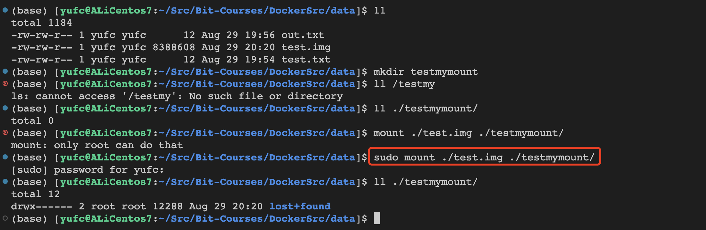
unshare 主要能力是使用与父程序不共享的名称空间运行程序。
xxxxxxxxxxunshare [options] program [arguments]参数
| 参数 | 含义 |
|---|---|
| -i, --ipc | 不共享 IPC 空间 |
| -m, --mount | 不共享 Mount 空间 |
| -n, --net | 不共享 Net 空间 |
| -p, --pid | 不共享 PID 空间 |
| -u, --uts | 不共享 UTS 空间 |
| -U, --user | 不共享用户 |
| -V, --version | 版本查看 |
| --fork | 执行 unshare 的进程 fork 一个新的子进程， 在子进程里执行 unshare 传入的参数 |
| --mount-proc | 执行子进程前，将 proc 优先挂载过去 |
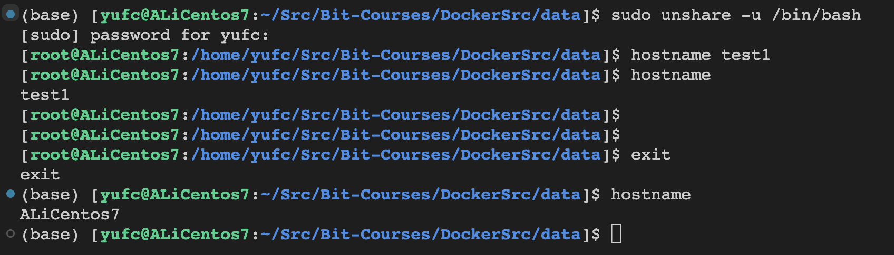
这幅图里面，一开始unshare创建了一个子进程，隔离的进程是bash
所以unshare下面我去修改hostname，是修改这个子进程的hostname，然后exit也是退出这个子进程而已，不会影响外面的hostname。
xxxxxxxxxxunshare -p /bin/bash我们会发现，直接报错。
xxxxxxxxxx(base) [yufc@ALiCentos7:~/Src/Bit-Courses/DockerSrc/data]$ unshare -p /bin/bashunshare: unshare failed: Operation not permitted(base) [yufc@ALiCentos7:~/Src/Bit-Courses/DockerSrc/data]$为什么会报这个错呢？
因为如果直接-p去隔离PID信息，会导致新的进程看不见原来父进程（bash）的信息，会导致他后续会有问题。
也就是说这个新进程，不知道自己的父进程是谁了，这是不允许的。所以。
xxxxxxxxxxunshare -p --fork /bin/bash # 这样即可我们再打开另一个bash，然后ps -ef查看一下进程信息。
发现是一样的，并没有完成隔离。
xxxxxxxxxx(base) [yufc@ALiCentos7:~]$ ps -efUID PID PPID C STIME TTY TIME CMDroot 1 0 0 Aug16 ? 00:00:36 /usr/lib/systemd/systemd --switched-root --system --deserialroot 2 0 0 Aug16 ? 00:00:00 [kthreadd]root 4 2 0 Aug16 ? 00:00:00 [kworker/0:0H]root 6 2 0 Aug16 ? 00:00:03 [ksoftirqd/0]...xxxxxxxxxx[root@ALiCentos7:/home/yufc/Src/Bit-Courses/DockerSrc/data]$ ps -efUID PID PPID C STIME TTY TIME CMDroot 1 0 0 Aug16 ? 00:00:36 /usr/lib/systemd/systemd --switched-root --system --deserialize 22root 2 0 0 Aug16 ? 00:00:00 [kthreadd]root 4 2 0 Aug16 ? 00:00:00 [kworker/0:0H]root 6 2 0 Aug16 ? 00:00:03 [ksoftirqd/0]...这是为什么呢，这是因为我们/proc目录下本来就有很多进程，大家都看得到的。
因此要采用另一个参数。
xxxxxxxxxxunshare -p --fork --mount-proc /bin/bash此时再次ps -ef查看进程。
xxxxxxxxxx(base) [yufc@ALiCentos7:~/Src/Bit-Courses/DockerSrc/data]$ sudo unshare -p --fork --mount-proc /bin/bash[root@ALiCentos7:/home/yufc/Src/Bit-Courses/DockerSrc/data]$ ps -efUID PID PPID C STIME TTY TIME CMDroot 1 0 0 09:48 pts/0 00:00:00 /bin/bashroot 20 1 0 09:48 pts/0 00:00:00 ps -ef[root@ALiCentos7:/home/yufc/Src/Bit-Courses/DockerSrc/data]$此时已经看不到什么进程了，我们完成进程隔离了。
第一步：打开第一个 shell 窗口 A，执行命令，df -h，查看主机默认命名空间的磁盘挂载情况。
xxxxxxxxxx(base) [yufc@ALiCentos7:~/Src/Bit-Courses/DockerSrc/data]$ df -hFilesystem Size Used Avail Use% Mounted ondevtmpfs 857M 0 857M 0% /devtmpfs 868M 0 868M 0% /dev/shmtmpfs 868M 576K 867M 1% /runtmpfs 868M 0 868M 0% /sys/fs/cgroup/dev/vda1 40G 25G 13G 67% /tmpfs 174M 0 174M 0% /run/user/1000/dev/loop0 6.8M 77K 6.2M 2% /home/yufc/Src/Bit-Courses/DockerSrc/data/testmymount(base) [yufc@ALiCentos7:~/Src/Bit-Courses/DockerSrc/data]$ 第二步：打开一个新的shell窗口，执行Mount隔离命令
xxxxxxxxxxunshare --mount --fork /bin/bash第三步：在窗口 B 中添加新的磁盘挂载
xxxxxxxxxx[root@ALiCentos7:/home/yufc]$ cd /home/yufc/Src/Bit-Courses/DockerSrc/data[root@ALiCentos7:/home/yufc/Src/Bit-Courses/DockerSrc/data]$ dd if=/dev/zero of=data2.img bs=8k count=1024010240+0 records in10240+0 records out83886080 bytes (84 MB, 80 MiB) copied, 0.0747759 s, 1.1 GB/s[root@ALiCentos7:/home/yufc/Src/Bit-Courses/DockerSrc/data]$ ls格式化这个文件。
xxxxxxxxxx[root@ALiCentos7:/home/yufc/Src/Bit-Courses/DockerSrc/data]$ mkfs -t ext4 ./data2.imgmke2fs 1.42.9 (28-Dec-2013)./data2.img is not a block special device.Proceed anyway? (y,n) yDiscarding device blocks: done Filesystem label=OS type: LinuxBlock size=1024 (log=0)挂载到当前的一个目录下。
xxxxxxxxxx[root@ALiCentos7:/home/yufc/Src/Bit-Courses/DockerSrc/data]$ tree ..├── data2.img├── out.txt├── test.img├── testmymount│ └── lost+found├── testmymount2└── test.txt
3 directories, 4 files[root@ALiCentos7:/home/yufc/Src/Bit-Courses/DockerSrc/data]$ cd /home/yufc/Src/Bit-Courses/DockerSrc/data^C[root@ALiCentos7:/home/yufc/Src/Bit-Courses/DockerSrc/data]$ mount -t ext4 ./data2.img ./testmymount2[root@ALiCentos7:/home/yufc/Src/Bit-Courses/DockerSrc/data]$ 我们发现，在这个bash下面是可以看到这个挂载点的。
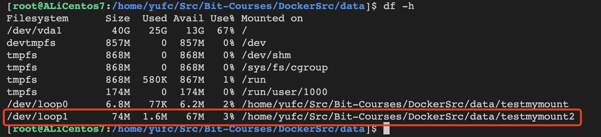
但是，外面的bash是看不到的！
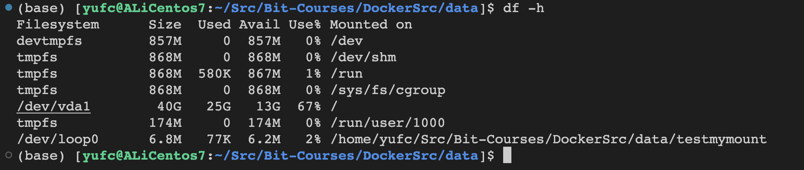
因此我们成功完成了一次挂载点的隔离！
现在无论我们在testmymount2这个文件夹里面去添加，或者修改任何文件，外面都是找不到的！
因此，在当前的进程中，是有文件隔离的！！
cgroups(Control Groups)是 linux 内核提供的一种机制，这种机制可以根据需求把系列系统任务及其子任务整合(或分隔)到按资源划分等级的不同组内，从而为系统资源管理提供一个统一的框架。简单说，cgroups 可以限制、记录任务组所使用的物理资源。本质上来说，cgroups 是内核附加在程序上的一系列钩子(hook)，通过程序运行时对资源的调度触发相应的钩子以达到资源追踪和限制的目的。
Resource limitation: 限制资源使用，例: 内存使用上限/cpu 的使用限制
Prioritization: 优先级控制，例:CPU 利用/磁盘IO 吞吐
Accounting:一些审计或一些统计
Control: 挂起进程/恢复执行进程
https://blog.csdn.net/taoxicun/article/details/127268136
pidstat是 sysstat 的一个命令，用于监控全部或指定进程的 CPU、内存、线程、设备1O 等系统资源的占用情况。Pidstat 第一次采样显示自系统启动开始的各项统计信息后续采样将显示自上次运行命令后的统计信息。用户可以通过指定统计的次数和时间来获得所需的统计信息。
xxxxxxxxxxpidstat [ 选项 ] [ <时间间隔> ] [ <次数> ]xxxxxxxxxx-u : 默认参数，显示各进程的 CPU 使用统计-r : 显示各进程的内存使用统计-d : 显示各进程的IO使用情况-p : 指定进程号,ALL表示所有进程-C : 指定命令-l : 显示命令名和所有参数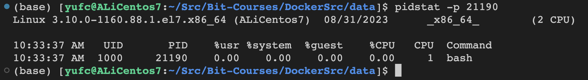
stress 是 Linux 的一个压力测试工具，可以对 CPU、Memory、IO、磁盘进行压力测试。
xxxxxxxxxxstress [OPTION [ARG]]xxxxxxxxxx-c, --cpu N : 产生 N个进程，每个进程都循环调用 sqrt 函数产生 CPU 压力。-i, --io N : 产生 N个进程，每个进程循环调用 sync 将内存缓冲区内容写到磁盘上，产生I0 压力。通过系统调用 sync 刷新内存缓冲区数据到磁盘中，以确保同步。如果缓冲区内数据较少，写到磁盘中的数据也较少，不会产生IO压力。在 SSD 磁盘环境中尤为明显，很可能 iowait 总是 0，却因为大量调用系统调用 sync，导致系统 CPU 使用率 sys 升高。-m, --vm N : 产生 N 个进程，每个进程循环调用 malloc/free 函数分配和释放内存。--vm-bytes B : 指定分配内存的大小--vm-keep : 一直占用内存，区别于不断的释放和重新分配(默认是不断释放并重新分配内存)-d, --hdd N : 产生 N个不断执行 write和 unlink 函数的进程(创建文件，写入内容，删除文件)--hdd-bytes B : 指定文件大小-t, --timeout N : 在 N秒后结束程序-q, --quiet:程序在运行的过程中不输出信息实操。
我们在打开另一个shell，对cpu进行一个监控
xxxxxxxxxxpidstat -C stress -p ALL -u 2 10000这里的意思是，监控stress这个命令相关的所有进程的cpu使用情况，2s输出一次，一共输出10000次。
在另一个shell中启动stress。
xxxxxxxxxxstress -c 1此时我们可以通过shell查看发现，此时cpu已经打满了。
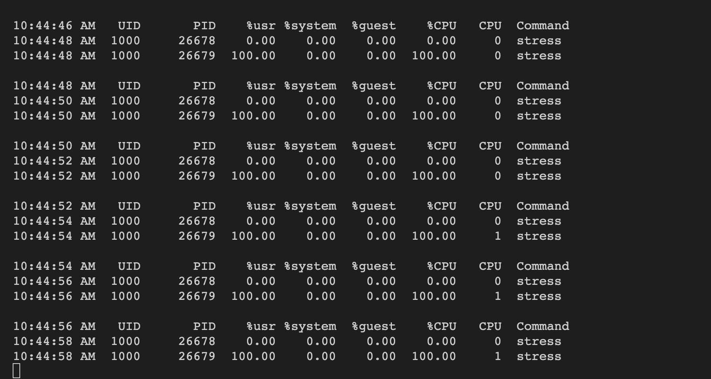
测试一下-i选项。
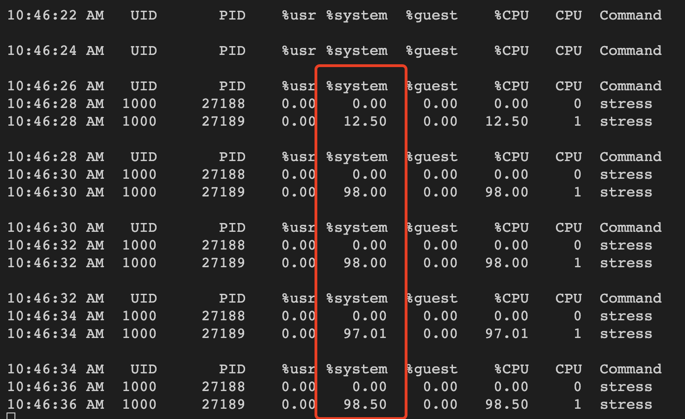
测试一下-m选项
xxxxxxxxxxstress -m 1 --vm-bytes 50m # 申请50mb的内存xxxxxxxxxxpidstat -C stress -p ALL -r 2 10000 # 查看内存就不是-u了，而是-r
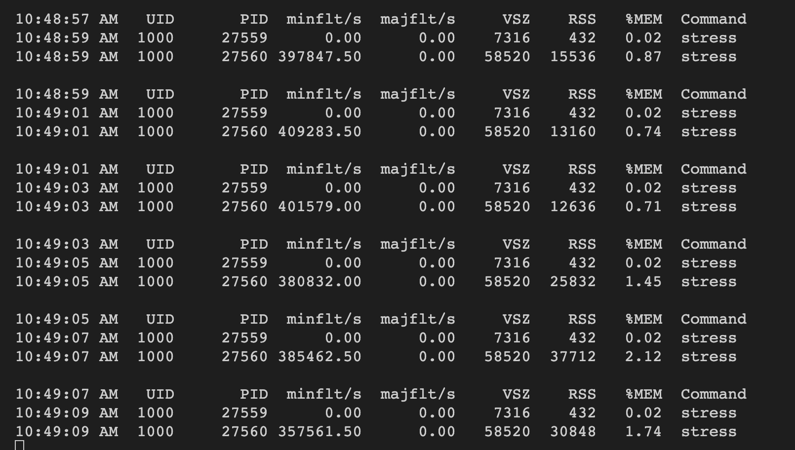
测试一下-d选项。
然后监控读写信息。
xxxxxxxxxxstress -d 1xxxxxxxxxxpidstat -C stress -p ALL -d 2 10000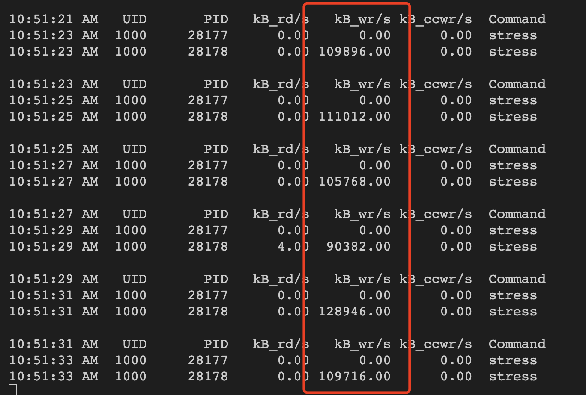
测试一下-t选项
xxxxxxxxxxstress -d 1 -t 3 # 3s后停止xxxxxxxxxx(base) [yufc@ALiCentos7:~]$ cat /proc/filesystems | grep cgroupnodev cgroup(base) [yufc@ALiCentos7:~]$如果看到 cgroup2，表示支持 cgroup v2。
xxxxxxxxxx(base) [yufc@ALiCentos7:~]$ cat /proc/cgroups#subsys_name hierarchy num_cgroups enabledcpuset 8 1 1cpu 2 4 1cpuacct 2 4 1memory 7 2 1devices 9 1 1freezer 11 1 1net_cls 4 1 1blkio 10 1 1perf_event 3 1 1hugetlb 6 1 1pids 5 1 1net_prio 4 1 1(base) [yufc@ALiCentos7:~]$ xxxxxxxxxx(base) [yufc@ALiCentos7:~]$ mount | grep cgroup tmpfs on /sys/fs/cgroup type tmpfs (ro,nosuid,nodev,noexec,mode=755)cgroup on /sys/fs/cgroup/systemd type cgroup (rw,nosuid,nodev,noexec,relatime,xattr,release_agent=/usr/lib/systemd/systemd-cgroups-agent,name=systemd)cgroup on /sys/fs/cgroup/cpu,cpuacct type cgroup (rw,nosuid,nodev,noexec,relatime,cpuacct,cpu)cgroup on /sys/fs/cgroup/perf_event type cgroup (rw,nosuid,nodev,noexec,relatime,perf_event)cgroup on /sys/fs/cgroup/net_cls,net_prio type cgroup (rw,nosuid,nodev,noexec,relatime,net_prio,net_cls)cgroup on /sys/fs/cgroup/pids type cgroup (rw,nosuid,nodev,noexec,relatime,pids)cgroup on /sys/fs/cgroup/hugetlb type cgroup (rw,nosuid,nodev,noexec,relatime,hugetlb)cgroup on /sys/fs/cgroup/memory type cgroup (rw,nosuid,nodev,noexec,relatime,memory)cgroup on /sys/fs/cgroup/cpuset type cgroup (rw,nosuid,nodev,noexec,relatime,cpuset)cgroup on /sys/fs/cgroup/devices type cgroup (rw,nosuid,nodev,noexec,relatime,devices)cgroup on /sys/fs/cgroup/blkio type cgroup (rw,nosuid,nodev,noexec,relatime,blkio)cgroup on /sys/fs/cgroup/freezer type cgroup (rw,nosuid,nodev,noexec,relatime,freezer)(base) [yufc@ALiCentos7:~]$以当前 shell 进程为例,查看进程的 cgroup。
xxxxxxxxxx(base) [yufc@ALiCentos7:~]$ cat /proc/$$/cgroup11:freezer:/10:blkio:/9:devices:/8:cpuset:/7:memory:/6:hugetlb:/5:pids:/4:net_prio,net_cls:/3:perf_event:/2:cpuacct,cpu:/1:name=systemd:/user.slice/user-1000.slice/session-2594.scope(base) [yufc@ALiCentos7:~]$ LXC (LinuX Containers) Linux容器，一种操作系统层虚拟化技术，为 Linux 内核容器功能的一个用户空间接口。它将应用软件系统打包成一个软件容器 (Container)内含应用软件本身的代码，以及所需要的操作系统核心和库。透过统一的名字空间和共享 API 来分配不同软件容器的可用硬件资源，创造出应用程序的独立沙箱运行环境使得 Linux 用户可以容易的创建和管理系统或应用容器。
LXC 是最早一批真正把完整的容器技术用一组简易使用的工具和模板来极大的简化了容器技术使用的一个方案
LXC 虽然极大的简化了容器技术的使用，但比起直接通过内核调用来使用容器技术其复杂程度其实并没有多大降低，因为我们必须要学会 LXC 的一组命令工具，且由于内核的创建都是通过命令来实现的，通过批量命令实现数据迁移并不容易。其隔离性也没有虚拟机那么强大。
后来就出现了 docker，所以从一定程度上来说，docker就是 LXC 的增强版。
检查系统环境是否满足容器使用要求。
创建lxc容器
xxxxxxxxxxlxc-create -n NAME -t TEMPLATE_NAME [--template-options]xxxxxxxxxxlxc-start -n NAME -d # 启动容器xxxxxxxxxxlxc-ls -f # 列出所有的容器 -f 表示打印常用的信息xxxxxxxxxxlxc-info -n NAME # 查看容器相关的信息进入容器
xxxxxxxxxxlxc-attach --name=NAME [--COMMAND]xxxxxxxxxxlxc -stop -n NAME # 停止容器xxxxxxxxxxlxc-destroy -n NAME # 删除处于停机状态的容器https://www.mryunwei.com/294151.html
检查lxc运行状态。
xxxxxxxxxx[root@ALiCentos7:/home/yufc]$ systemctl status lxc● lxc.service - LXC Container Initialization and Autoboot Code Loaded: loaded (/usr/lib/systemd/system/lxc.service; disabled; vendor preset: disabled) Active: active (exited) since Thu 2023-08-31 22:06:05 CST; 2min 56s ago Process: 5141 ExecStart=/usr/libexec/lxc/lxc-autostart-helper start (code=exited, status=0/SUCCESS) Process: 5134 ExecStartPre=/usr/libexec/lxc/lxc-devsetup (code=exited, status=0/SUCCESS) Main PID: 5141 (code=exited, status=0/SUCCESS) Tasks: 0 Memory: 0B CGroup: /system.slice/lxc.service
Aug 31 22:05:34 ALiCentos7 systemd[1]: Starting LXC Container Initialization and Autoboot Code...Aug 31 22:05:34 ALiCentos7 lxc-devsetup[5134]: Creating /dev/.lxcAug 31 22:05:34 ALiCentos7 lxc-devsetup[5134]: /dev is devtmpfsAug 31 22:05:34 ALiCentos7 lxc-devsetup[5134]: Creating /dev/.lxc/userAug 31 22:06:04 ALiCentos7 lxc-autostart-helper[5141]: Starting LXC autoboot containers: [ OK ]Aug 31 22:06:05 ALiCentos7 systemd[1]: Started LXC Container Initialization and Autoboot Code.[root@ALiCentos7:/home/yufc]$ 检查系统环境是否满足容器使用要求。
xxxxxxxxxx[root@ALiCentos7:/home/yufc]$ lxc-checkconfigKernel configuration not found at /proc/config.gz; searching...Kernel configuration found at /boot/config-3.10.0-1160.88.1.el7.x86_64--- Namespaces ---Namespaces: enabledUtsname namespace: enabledIpc namespace: enabledPid namespace: enabledUser namespace: enabledWarning: newuidmap is not setuid-rootWarning: newgidmap is not setuid-rootNetwork namespace: enabledMultiple /dev/pts instances: enabled
--- Control groups ---Cgroup: enabledCgroup clone_children flag: enabledCgroup device: enabledCgroup sched: enabledCgroup cpu account: enabledCgroup memory controller: enabledCgroup cpuset: enabled
--- Misc ---Veth pair device: enabledMacvlan: enabledVlan: enabledBridges: enabledAdvanced netfilter: enabledCONFIG_NF_NAT_IPV4: enabledCONFIG_NF_NAT_IPV6: enabledCONFIG_IP_NF_TARGET_MASQUERADE: enabledCONFIG_IP6_NF_TARGET_MASQUERADE: enabledCONFIG_NETFILTER_XT_TARGET_CHECKSUM: enabled
--- Checkpoint/Restore ---checkpoint restore: enabledCONFIG_FHANDLE: enabledCONFIG_EVENTFD: enabledCONFIG_EPOLL: enabledCONFIG_UNIX_DIAG: enabledCONFIG_INET_DIAG: enabledCONFIG_PACKET_DIAG: enabledCONFIG_NETLINK_DIAG: enabledFile capabilities: enabled
Note : Before booting a new kernel, you can check its configurationusage : CONFIG=/path/to/config /usr/bin/lxc-checkconfig
[root@ALiCentos7:/home/yufc]$查看lxc提供的容器模版。
xxxxxxxxxx[root@ALiCentos7:/home/yufc]$ ls /usr/share/lxc/templates/lxc-alpine lxc-busybox lxc-debian lxc-gentoo lxc-oracle lxc-ubuntulxc-altlinux lxc-centos lxc-download lxc-openmandriva lxc-plamo lxc-ubuntu-cloudlxc-archlinux lxc-cirros lxc-fedora lxc-opensuse lxc-sshd[root@ALiCentos7:/home/yufc]$都有这么一些模版。
创建一个ubuntu的容器。
xxxxxxxxxxlxc-create -t ubuntu --name lxchost1 -- -r xenial -a amd64安装好之后，lxc-ls
xxxxxxxxxx[root@ALiCentos7:/home/yufc]$ lxc-ls -fNAME STATE IPV4 IPV6 AUTOSTART ----------------------------------------lxchost1 STOPPED - - NO [root@ALiCentos7:/home/yufc]$启动这个容器。
xxxxxxxxxx[root@ALiCentos7:/home/yufc]$ lxc-start -n lxchost1 -d # 让他后台运行[root@ALiCentos7:/home/yufc]$ lxc-ls -fNAME STATE IPV4 IPV6 AUTOSTART ----------------------------------------lxchost1 RUNNING - - NO [root@ALiCentos7:/home/yufc]$查看这个容器的信息。
xxxxxxxxxx[root@ALiCentos7:/home/yufc]$ lxc-info -n lxchost1Name: lxchost1State: RUNNINGPID: 12901IP: 192.168.122.244 # 通过这个IP地址，我们可以ssh连接这个容器CPU use: 0.06 secondsBlkIO use: 7.29 MiBMemory use: 7.71 MiBKMem use: 0 bytesLink: vethM2V3M1 TX bytes: 2.02 KiB RX bytes: 4.12 KiB Total bytes: 6.14 KiB[root@ALiCentos7:/home/yufc]$我们有了这个IP地址之后，可以通过ssh的方法，或者lxc-attach的方法连接这个容器。
xxxxxxxxxx[root@ALiCentos7:/home/yufc]$ ssh ubuntu@192.168.122.244The authenticity of host '192.168.122.244 (192.168.122.244)' can't be established.ECDSA key fingerprint is SHA256:QQF2a8Od/77dtoGj3sDMJMwP4rWIrJRuMFRIu1ofWmw.ECDSA key fingerprint is MD5:da:54:c2:47:fb:24:ef:fa:fc:49:c0:c3:53:f2:c3:d0.Are you sure you want to continue connecting (yes/no)? yesWarning: Permanently added '192.168.122.244' (ECDSA) to the list of known hosts.ubuntu@192.168.122.244's password: Welcome to Ubuntu 16.04.7 LTS (GNU/Linux 3.10.0-1160.88.1.el7.x86_64 x86_64)
* Documentation: https://help.ubuntu.com * Management: https://landscape.canonical.com * Support: https://ubuntu.com/advantage
The programs included with the Ubuntu system are free software;the exact distribution terms for each program are described in theindividual files in /usr/share/doc/*/copyright.
Ubuntu comes with ABSOLUTELY NO WARRANTY, to the extent permitted byapplicable law.
To run a command as administrator (user "root"), use "sudo <command>".See "man sudo_root" for details.
ubuntu@lxchost1:~$ # 此时发现，我们的bash已经发生了变化！这里面就是一个容器！！！此时发现，我们的bash已经发生了变化！这里面就是一个容器！！！
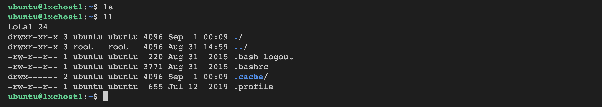
通过第二种方式：lxc-attach的方式。
xxxxxxxxxxlxc-attach -n lxchost1 --clear-env -- /bin/bash这种方式也是可以的。
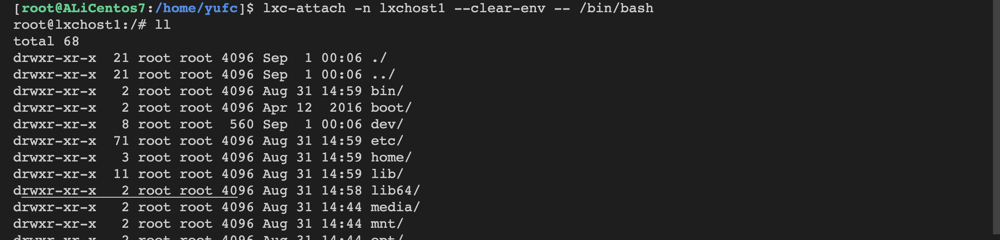
停止这个容器。
xxxxxxxxxxlxc-stop -n lxchost1删除这个容器。
xxxxxxxxxxlxc-destroy -n lxchost1